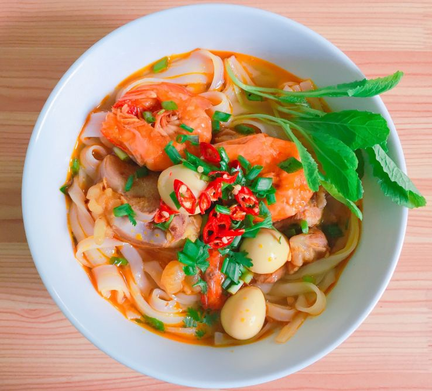

Ingredients for Sikkimese Phagshapa 🍲
- 500g Pork Belly (cut into chunks) 🐖
- 1 Onion (finely chopped) 🧅
- 2 Tomatoes (chopped) 🍅
- 1 tbsp Ginger-Garlic Paste 🧄
- 1 tbsp Soy Sauce 🍜
- 1-2 Green Chilies (slit) 🌶️
- 1/2 tsp Turmeric Powder ✨
- 1 tbsp Red Chili Powder 🌶️
- 1 tbsp Coriander Powder 🌿
- 1 tsp Sikkimese Spice Mix (or Garam Masala) 🌶️✨
- 2 tbsp Oil (for cooking) 🍳
- 1-2 Bay Leaves 🍃
- 2-3 Cloves 🌿
- 2-3 Cardamom Pods 🌿
- 2-3 Cups Water 💧
- 1/2 Cup Mustard Greens (or spinach as a substitute) 🌿
- Salt to taste 🧂
- Fresh Cilantro for garnish 🌿
Steps 🍴
- Heat oil in a large pan or pressure cooker over medium heat. Add bay leaves, cloves, and cardamom pods. Let them sizzle for a few seconds. 🍃🌿
- Add chopped onions and sauté until golden brown. 🧅
- Add the ginger-garlic paste and sauté for 2 minutes until fragrant. 🧄
- Add chopped tomatoes and cook until they soften and oil starts to separate from the masala. 🍅
- Add red chili powder, turmeric powder, coriander powder, and Sikkimese spice mix (or garam masala). Stir well and cook for 2 minutes to release the flavors. 🌶️✨
- Add the pork belly chunks and stir well to coat the meat with the spices. Cook for 5 minutes to sear the pork. 🐖
- Add soy sauce, green chilies, and salt. Stir to combine. 🌶️🍜
- Add water (around 2-3 cups, depending on how much gravy you want) and bring it to a boil. Reduce the heat and simmer for 30-45 minutes, or until the pork is tender and cooked through. 🧂💧
- Add the mustard greens (or spinach) and cook for an additional 5-7 minutes until the greens are soft. 🌿
- Taste and adjust salt and spices if needed. Garnish with fresh cilantro before serving. 🌿